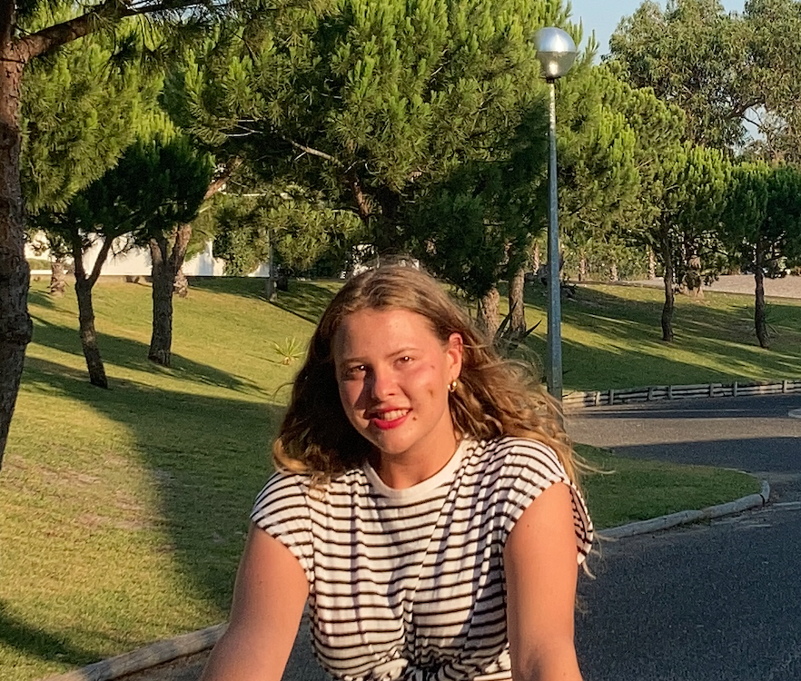

<!DOCTYPE html>
<html>
<head>
	<title></title>
	<link rel="stylesheet" type="text/css" href="style.css">


<div class="frame"> 
</body>
</html>
<h1>Presentation</h1>
<h2>About</h2>
<p>Brought up between different countries, I can today adapt effortlessly .
Nothing is more eye-opening than surrounding yourself with another culture.
With a traveled eye, I feel great need to satisfy my huge amount of curiosity on world’s
global issues and to explore new ways of thinking and acting.</p>
<h3><b>Core</b> qualifications</h3>
<ul>
	<li> Communication</li>
	<li>Team Leadership</li>
	<li>Project Management</li>
	<li>Space Planning and Utilization</li>
</ul>
<div/>

<a href="https://www.linkedin.com/in/margot-brugal-2b596719a/" target="_blank">LinkedIn</a>
<br>
<br>

<br>
<br>
</body>
</html>
<h2>Experience</h2>
<p>Internship at Young&Rubicam, a creative agency who focuses on the client relationship and his experience. It was the first step into the world of communication, and it impacted me a lot. I participated in some client's projects (for example : Audi or Fifa World Cup). I cam to love the process between a client's wish and his idea to the realisation and the making-of.</p>
<br>
<br>
<body>
	<iframe width="400" height="315" src="https://www.youtube.com/embed/2MKtM0PqFh4" title="YouTube video player" frameborder="0" allow="accelerometer; autoplay; clipboard-write; encrypted-media; gyroscope; picture-in-picture" allowfullscreen></iframe>
